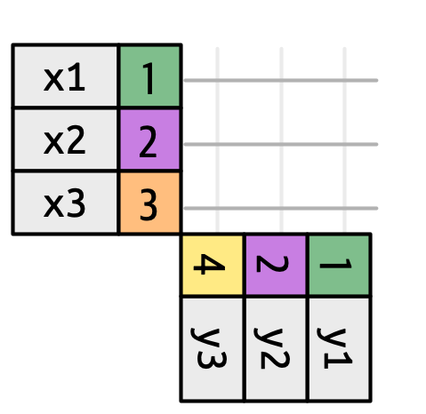

In the past two weeks, we’ve been learning about several functions from the dplyr package, a central workhorse of the tidyverse ecosystem, to manipulate data in data frames.
In real-world data analysis, it’s uncommon to work with just a single data frame. More often than not, you will be dealing with multiple data frames that you need to combine to effectively address your analytical questions.
In this session, we will explore the essential techniques for merging data frames using the _join functions provided by the dplyr package.
Learning objectives for today
Understand Join Fundamentals:
Grasp the basics of joins and their significance in merging datasets.
Learn about keys and their use in linking different data frames.
Explore Mutating Joins:
Get acquainted with mutating join functions in dplyr, such as inner_join, left_join, right_join, and full_join.
Learn how to add new columns to a data frame using matching records from another.
Discover Filtering Joins:
Learn how to use filtering join functions like semi_join and anti_join.
Understand how to retain or exclude records in one data frame based on matches with another data frame.
Setting up
Load the tidyverse meta-package:
library(tidyverse)
── Attaching core tidyverse packages ──────────────────────── tidyverse 2.0.0 ──
✔ dplyr 1.1.4 ✔ readr 2.1.5
✔ forcats 1.0.0 ✔ stringr 1.5.1
✔ ggplot2 3.5.1 ✔ tibble 3.2.1
✔ lubridate 1.9.3 ✔ tidyr 1.3.1
✔ purrr 1.0.2
── Conflicts ────────────────────────────────────────── tidyverse_conflicts() ──
✖ dplyr::filter() masks stats::filter()
✖ dplyr::lag() masks stats::lag()
ℹ Use the conflicted package (<http://conflicted.r-lib.org/>) to force all conflicts to become errors
2 Data Jazz: Merging with dplyr Joins
Just as a jazz band brings together a variety of instruments to create a rich, spontaneous musical experience, data analysis often involves merging different data sets to form a coherent and insightful whole. Each data set can be thought of as an instrument in a jazz ensemble, contributing its unique timbre and melody to the overall composition.
When you use join functions from the `dplyr` package in R Studio, it’s like orchestrating an improvisational jazz performance where the trumpet’s crisp notes (one data set) harmonize with the saxophone’s smooth riffs (another data set), underpinned by the piano’s rhythmic chords (yet another data set).
By cleverly combining these data sets through joins, you can produce an insightful and dynamic data analysis, much like a jazz composition that resonates on multiple levels.
Illustration by Barandash Karandashich
Looking to get excited about jazz? Click here for a book recommendation!
awards <-tibble(award_id =1:5,musician_id =c(1, 2, 4, 4, 5),award_name =c("Grammy Hall of Fame", "Grammy Lifetime Achievement Award", "Grammy Hall of Fame", "National Medal of Arts", "Grammy Lifetime Achievement Award"),year =c(1999, 1990, 1999, 1987, 1972))
Gigs data frame:
gigs <-tibble(gig_id =1:6,musician_id =c(1, 2, 2, 4, 1, 5),venue =c("Blue Note", "Village Vanguard", "Birdland", "Newport Jazz Festival", "Montreux Jazz Festival", "Cotton Club"),date =as.Date(c("1961-11-18", "1961-03-21", "1961-04-12", "1962-07-11", "1965-03-10", "1937-06-26")),city =c("New York", "New York", "New York", "Newport", "Montreux", "Harlem"))
3 Let’s explore the different _join funtions
When merging datasets, we typically integrate variables from one dataset into another using a specific “key” variable. Let’s examine our JAZZ datasets and explore the joining verbs:
3.1 Setting the Stage
Key variables

Set up
3.2 Mutating _join funtions:
Chapter 19: Joins [R4DS (2ed)]
left_join (and right_join)
left_join
right_join
Left join: Musicians with all their gigs.
musicians |>left_join(gigs, by =join_by(musician_id))
Right join: All albums and related musicians.
musicians |>right_join(albums, by =join_by(musician_id))
inner_join (and full_join)
inner_join
full_join
Inner join: Musicians and their albums.
musicians |>inner_join(awards, by =join_by(musician_id))
Full join: Complete overview of musicians and their awards.
musicians |>full_join(awards, by =join_by(musician_id))
3.3 Exercises I
A) Find all albums by Miles Davis.
Hint (click here)
Use an inner join to list all albums released by Miles Davis. Then use filter() to end up with a data set with information only for Miles Davis.
Solution (click here)
musicians |>inner_join(albums, by =join_by(musician_id)) |>filter(name =="Miles Davis")
# A tibble: 2 × 9
musician_id name instrument years_active genre.x album_id album_title
<dbl> <chr> <chr> <chr> <chr> <int> <chr>
1 2 Miles Davis Trumpet 1944-1975 Jazz 2 Kind of Blue
2 2 Miles Davis Trumpet 1944-1975 Jazz 4 Bitches Brew
# ℹ 2 more variables: release_year <dbl>, genre.y <chr>
B) Combine musicians, gigs, and awards information.
Hint (click here)
Perform a left join to combine musicians with their gigs and awards information.
Solution (click here)
musicians |>left_join(gigs, by =join_by(musician_id)) |>left_join(awards, by =join_by(musician_id), relationship ="many-to-many")
# A tibble: 8 × 12
musician_id name instrument years_active genre gig_id venue date city
<dbl> <chr> <chr> <chr> <chr> <int> <chr> <date> <chr>
1 1 John … Saxophone 1945-1967 Jazz 1 Blue… 1961-11-18 New …
2 1 John … Saxophone 1945-1967 Jazz 5 Mont… 1965-03-10 Mont…
3 2 Miles… Trumpet 1944-1975 Jazz 2 Vill… 1961-03-21 New …
4 2 Miles… Trumpet 1944-1975 Jazz 3 Bird… 1961-04-12 New …
5 3 Thelo… Piano 1934-1975 Bebop NA <NA> NA <NA>
6 4 Ella … Vocals 1934-1993 Swing 4 Newp… 1962-07-11 Newp…
7 4 Ella … Vocals 1934-1993 Swing 4 Newp… 1962-07-11 Newp…
8 5 Louis… Trumpet 1919-1971 Jazz 6 Cott… 1937-06-26 Harl…
# ℹ 3 more variables: award_id <int>, award_name <chr>, year <dbl>
C) List of venues with musician information.
Hint (click here)
Perform a right join to get a list of all gig venues and the associated musician details.
Solution (click here)
musicians |>right_join(gigs, by =join_by(musician_id))
# A tibble: 6 × 9
musician_id name instrument years_active genre gig_id venue date city
<dbl> <chr> <chr> <chr> <chr> <int> <chr> <date> <chr>
1 1 John … Saxophone 1945-1967 Jazz 1 Blue… 1961-11-18 New …
2 1 John … Saxophone 1945-1967 Jazz 5 Mont… 1965-03-10 Mont…
3 2 Miles… Trumpet 1944-1975 Jazz 2 Vill… 1961-03-21 New …
4 2 Miles… Trumpet 1944-1975 Jazz 3 Bird… 1961-04-12 New …
5 4 Ella … Vocals 1934-1993 Swing 4 Newp… 1962-07-11 Newp…
6 5 Louis… Trumpet 1919-1971 Jazz 6 Cott… 1937-06-26 Harl…
musicians |>semi_join(awards, by =join_by(musician_id))
What is the difference between inner_join and semi_join ?
Notice that the observations in both data frames are the similar, but that the inner join adds the variables from the data frame “y”, whereas the semi join only uses the “y” data frame to determine which observations to keep.
3.5 Exercises II
A) Find musicians without any gigs.
Hint (click here)
Using an anti join, find musicians who haven’t have any gigs in this period.
Solution (click here)
musicians |>anti_join(gigs, by =join_by(musician_id))
4 Merging Data Sets in Base R
The merge function in base R can perform inner joins, left joins, right joins, and full joins by specifying appropriate parameters.
Left join: Musicians with all their gigs.
merge(musicians, gigs, all.x =TRUE, by ="musician_id")
Right join: All albums and related musicians.
merge(musicians, albums, all.y =TRUE, by ="musician_id")
Inner join: Musicians and their albums.
merge(musicians, awards, all =FALSE, by ="musician_id")
Full join: Complete overview of musicians and their awards.
merge(musicians, awards, all =TRUE, by ="musician_id")
With merge(), you can achieve the same results as dplyr’s mutating joins, though dplyr provides a more explicit and often more readable syntax for many users. Both methods are powerful, and understanding both can be very useful in different contexts!